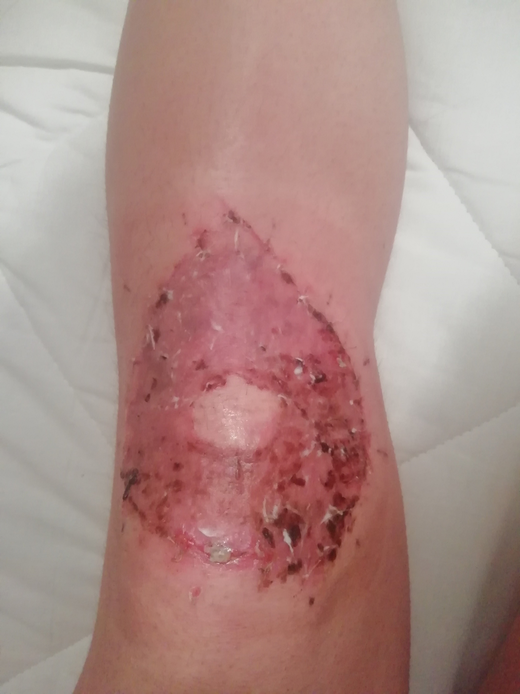
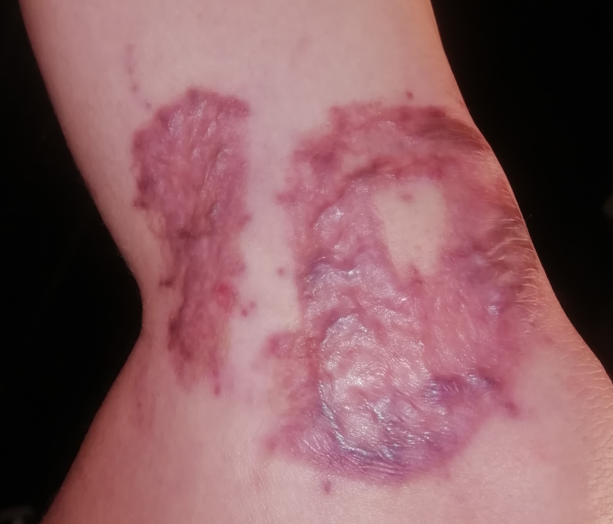
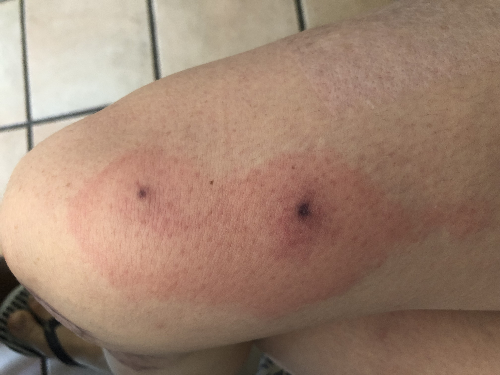

DAY 1

I felt very tired. And hungry. I thought I'd cook myself some pasta, before collapsing in bed. All I had was some pasta and spme cans of tuna. I took a can of tuna and looked for a can opener. I couldn't find one. My housemate told me she opened hers the other day with a knife. I took a big kitchen knife. My housemate left the kitchen. I cut myself with the knife I was trying to open the can of tuna with. Luckily, it was a very small cut. No harm done (yet). The sight of blood made my head spin. I sat down for a little while. I gave up on my (somewhat desperate) attempt to open the can of tuna, but not on the pasta. I stood up again and turned the kettle on. And then... while transfering the boiling water from the kettle to the saucepan, I fainted! Lots of boiling water fell on the floor and my knees bathed in it for a while (5, 10, 15 seconds? I don't know). When I woke up, I did not realise I burned my knees straightway. I felt confused. And also embarrassed for some reason. I gave up on the pasta and went to bed. Once in bed, I noticed my trousers were wet. I took them off and this is what I saw. |


I searched online to make up my mind about what had just happened. Third degree, second degree? White skin. Bad sign? No blisters. Good sign? I called 111. I listened to a few minutes of pre-registered covid advice. Someone eventually picked up. He asked a lot of inconsequential questions. No, my left side of my face has not done anything weird. No, I am breathing ok. No, I am not having a heart attack. I just burned my knees and I don’t know what I should do about it. He told me someone would call me back. While waiting for someone to call me back this is what I saw. |

40 minutes later, I called 111 again. I listened to a few minutes of pre-registered covid advice. Someone eventually picked up. Me: I burned my knees and someone was supposed to call me back. It’s been a while, so just checking in. Them: Someone will call you soon. Are you calling to report any changes? Me: No, I am calling to ask if someone is going to call me back. Them: But are you reporting any changes? Me: Yes some blisters are forming. Them: Ok, so you are calling to report some changes. Me: Yes, ok whatever. In the meanwhile the blisters got bigger. 15 minutes later someone finally called me. She saw my knees through video call and told me to go to A&E. She told me she booked an appointment for me at 11:45 pm, so I should aim to get there by then. |

After wrapping up my knees in cling film (as I was advised), I got a cab to A&E in my pijama in the freezing cold. Once I got there, I told the receptionist that I had an appointment. She told me they didn't take appointments. Me: What?! I was told by 111 that they booked an appointment for me! She: Yes, but we don't take appointments. Me: So why did 111 tell me that I had an appointment? She: They keep saying that to people, but we simply don't take them. I ended up spending the the whole night in A&E. By the time I saw a skin specialist it was 8.30 am. By that point the blisters had got really quite huge. This is what my knees looked like at around 2am (they got a lot bigger than that!). Although everyone had seemed rather worried about my knees till then (I did not feel much pain, which is usually a bad sign), the skin specialist, after a very quick look at my knees, said that they didn't look that bad and that I probably wouldn't need skin grafting. Before leaving, the skin specialist asked his assitant to pop all the blisters, and send me home. |
DAY 4


This is the first time I saw my knees afer DAY 1. I was told to shower and change the bandages on my knees, so I did that. I was dreading it, but I was surprised to find out that showering with live skin on one's knees is not as unpleaseant as one might expect (it would have been nice if someone had told me that). My knees had not hurt very much till I took the shower on DAY 4. But for the next 5 days after that shower, standing on my feet became extremely painful and I was no longer able to walk. I was told it had something to do with blood pressure. It got a bit less painful after 5 days. |
DAY 7

I went to the hospital for a check up. This is what my knees looked like by then. The nurse had a quick look at them and told me they were badly burnt (third degree burns) and that I would need skin grafting ASAP. All I was told by the nurse is that I probably would need more skin grafting on my left knee than on my right knee. She changed my bandages and put some thick cream on my knees. |
DAY 11
|
Shower time once again! This was the prettiest scene so far. Very colourful! However, removing the bandages was a real nighmere this time: my skin had got stuck to the bandages because of that thick cream the nurse had put on my knees a few days ealrier; so if I pulled the bandages, I pulled my skin! It took me about 40 minutes to take off the bandages. Fun times. This is the last time I saw my old knees. |
DAY 14: DAY OF OPERATION

Before the operationI was told once again that my left knee was worse off than my right knee and that I shouldn't put any weight on my left leg for a week or so from the day of the operation. I was also made fun of by one of the doctors for asking too many questions. I did not like that. After the operationI woke up in the biggest physical pain I've ever had (really!). Only my knees hurt, but they hurt BIG time. They gave me morphine and after about 20 minutes the pain finally stopped. While I was wating for the morphine to have an effect, the nurse in charge of me kept singing the same song again and again. I think it went something like this: I am in pain, but I don't want to tell you, because I don't want to hurt you. But I was out of my mind and I can't find this song anywhere so for all I know I could have imagined it all. Once the morphine kicked in, they transferred me to the room I was in prior to the operation. I fell asleep. The nurses woke me up to say that they had called my boyfriend to pick me up and that he was coming to get me. It was about 3 pm, I think. I said I would not leave till I could speak to a doctor for two reasons: 1) without being assured that I would not experience the same pain that I had been in less than a couple of hours earlier, there is no way I would leave. 2) how was I was supposed to leave without any cruches if I was not supposed to put any weight on my left leg as the doctors had told just before the operation? The nurses were not happy. I was not happy either. I waited. I had an argument with the nurses. I waited. A doctor finally came to speak to me at around 8pm. We had an argument and I won it (rather quickly). He admitted that I was right and that I would need some cruches. He also casually informed me that both of my knees had turned out to be pretty bad (so I was not supposed to put weight on neither of my legs!). Btw this was the same doctor who had made fun of me for asking to many questions. Hilarious. It turns out there were no cruches. I had to stay the night. It turns out there was no bed! I had to wait till 11.30 pm till they found one. By this point, one of the nurses (who had not been a great fan of me earlier) became a sort of ally of mine against the mean doctor. It felt good! She stayed way past her working hours to wait for me till they found me a bed. She also gave me some tea and a couple of sandwiches. And she let my partner in to keep me company. |


The next week after the operation was a rough one. I was stuck in bed for the whole week. They gave me a portable toilet (a commode), which you can see in the top left picture. The donor site bled quite a bit after a couple of days, but then it stopped. My thighs started to seriously itch after the first 4 days, and there was not much I could do about it (antihistamines may have helped a little sometimes, but it was hard to tell). I fainted the one time I tried to go to a real toilet. The bottom picture is me the day before my viva. |
DAY 21


My new knees! Not the best of scenes :) BUT I was so happy to get rid of my old gear. And I got some ASMR while watching the nurse cutting through the bandages as a bonus (it took about 20 min)! I was also told that I could finally start walking again (without bending my knees)! I also passed my viva and became a doctor. So overall a good day. |


My new gear. |
DAY 25


This was the scariest one for me. My left knee looked alright. But my right knee freaked me out big time. I just couldn't tell what the hell was going on over there. Live minced meat all over. All very wet and weird. It just did not look good. And it did not smell good either. For the next 3 days after this scene I was pretty convinced that the skin graft had failed and that I would need surgery again for my right knee. |
DAY 28

Despite my pessimism of the previous few days, on day 28 I received some unexpected positive news! My knees were healed (and they also looked a lot less gross too)! Essentially what this meant is that the new skin had officially stuck to whatever it is supposed to stick on. I was told the disgusting live meat bits were merely due to some overgrowth business, which is normal. So all good! I was also told I could now bend my knees however much I wanted! Another good day! |

I should mentioned my donor site. This is the first time I saw it. And it looked like this. It was very dry but it was hardly painful. And it felt really good to let it breath some fresh air after such a long time. |
DAY 30


After only two days from my last visit to the hospital and a couple of showers my knees changed really quite a bit! They certainly started to look more like knees covered in something resembling skin. |

I should mention that at my last visit I was told to put some silver nitrate on the disgusting live meat bits - which is what I did for 4 days. And it did dry them up quite quickly (in about 5 days). |
DAY 33

Like DAY 30, but a bit better! |
DAY 35

Like DAY 33, but a bit better! |

My donor site also looked much better. I moisturized it twice a day (I used E45) since my last visit to the doctor and it became less dry very quickly (and maybe a bit less purple too). |
DAY 42
|
I could now bend my left leg nearly as much as I used to, but I noticed something somewhat odd. As soon as I woke up I couldn't bend it very well at all. But as the day went by I could bend it more and more! Did the skin stiffen up during the night and then take some time to stretch again? I have no idea. |

Most scabs had fallen off by DAY 42 (mostly by brute force, as I had made the mistake once of wrapping up my knees without sticking any plaster on them first and hence most scabs were pulled off by the moving bandages rather abruptly - after that, my knees hurt quite a bit for a couple of days). There were, however, still quite a few scabs around the stiches. |

By DAY 42, all the scabs had fallen off my donor site, which also no longer hurt at all when I touched it. |
DAY 49
|
On day 43, I decided to remove the stitches byself as it felt it was the right time for them to go (no one had told me what to do about them). It was easier than expected! A few days later all the scabs finally fell off. This meant that I could finally stop coming up with new more efficient ways to wrap up my knees, which had become quite annoying by this point. |
DAY 63
|
This is what my knees looked like 7 weeks after the operation. They looked a lot like 2 weeks ealier, except that the red bits had now turned purple and that's about it. However, I could now put pressure on them without feeling pretty much any pain whatsoever which was a welcome change (my sense of touch had also considerably improved by this point). This was also the day of my third and last visit to the plastic surgery department after the operation. While the nurse was having a look at my knees, a doctor made a very quick appearence and told me that my scars looked very thick. After repeating that a few times (and not saying much else at all), he left the room. I asked the nurse what the doctor meant by this. She explained to me that some people heal better than others (implying that I wasn't one of the lucky ones). She also told me that Anglo-Saxon skin usually heals better, so I clearly didn't make the cut. However, this was a bit odd, since just before the operation the nicer doctor (not the mean one) had told me that my knees would probably heal well since I had light skin. So, in a nutshell, before the operation I did make the cut, after the operation I no longer did. In any case, they told me I should keep moisturizing my knees twice a day with firm pressure (they also raccomended using a scar gel) and that I should wear tight things around my knees. And then my knees and the NHS parted ways. |

This is what my donor site looked like - a bit lighter than before. |
DAY 93
|

One month later and not much to report. Maybe my knees had gotten a bit softer and a tiny little bit smoother and lighter, but that's really it. Admittedly, by this point I started finding my knees boring again and I was somewhat disappointed by this new state of affairs. Perhaps, this lack of excitement I started experiencing when looking at my knees was a sign of the development of a healthier relationship towards them, but I did miss the excitement nonetheless. |
|
On the other hand, my donor site had changed considerably in one month. It had gotten substantially lighter. |
DAY 142
|
This is what my knees looked like about 4 months after the operation. They were just a bit lighter than a couple of months earlier (pictures above), but the difference was rather unsubstantial. I noticed that my skin felt a little bit tight and uncomfortable if I sat down for a long time. |
|
My donor site, however, had gotten substantially lighter than a couple of months earlier. |
DAY 261
|
This is what my knees looked like about 8 months after the operation. They were a bit lighter than 4 months earlier, but still very visible. They itched a bit from time to time. Sensitivity was ok, but not back to normal (lower than normal to the touch, but higher than normal if I accidentally bashed them against something). It still hurt if I sat on my knees on a hard surface. |
|
My donor site was also lighter than 4 months earlier. But the skin in my donor site looked a bit like an old person's skin and my pores were dilated. |
Spider bite
|

Despite my knees were not changing much these days, my legs did go through another adventure! Around this time, I got bitten by a mysterious spider and this is what happened! I never saw the spider and it also turnes out no one really knows anything about spiders (which was a little suprising since I was in the italian countryside at the time and you'd think they would know a few things about them...) I still think that it was proabably this one, but the only doctor who dared to make a hypothesis said: "Nope, it can't be that one since you would have been a lot worse off!". So not really sure tbh. In any case, I took antibiotics and cortesone ect. and after about a week the redness and the pain were gone, but it did leave a hole. It's still there but it's getting smaller so we'll see! |
1 YEAR ANNIVERSARY
|
One year has gone since I burned my knees so I guess it's time for an update. The first two pictures are my left knee. The next two are my right one. My knees look a bit shiny because I still (kind of) regularly moisturize them (I use E45 or Bio-Oil dry skin gel ). I'd say the colour of my donor site has nearly gone back to that of the rest of my skin. Its texture is still a bit weird though and the pores are still dilated. A scab appeared on my donor site about 6 months ago (second last picture) and it's still there. I often pick it (I know I shouldn't) because it gets really dry and it's just too tempting but it just comes back each time anyway. I booked an appointment for a biopsy but I missed it, so I'll have to book another one soon. The last picture is the whole shebang! |
DAY 0-14 (some reflections)
|
Some mistakes I made and what I’ve learnt from them: |
DAY 15-30 (some reflections)
|
hvhhdabfv fndjapn fjdafnapfn fajsfnap pjfndpabvjad apfjanfp |